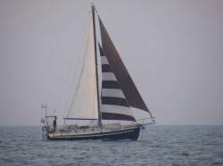
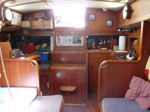
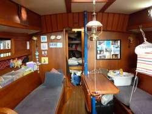
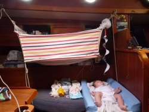

Hafskip
 Hafskip is de naam van onze boot. De vorige (en tevens de eerste) eigenaars hebben haar zo genoemd. Het is een Noorse naam en het betekent zoiets als "familieschip". De Vikingen veroverden veel land en om er zeker van te zijn dat het van hen bleef brachten ze hele families over om er te gaan wonen. Die families werden vervoerd met het hafskip.
De "Hafskip" is gebouwd bij DEVO, een werf in Hellevoetsluis, Nederland. Het is een ontwerp van Frits de Vos. Hier zijn er uiteindelijk dertig van gebouwd, waarna de werf helaas failliet ging. De Jan Haring is vooral bekend geworden vanwege haar kleinere zusje van 7,5 meter lang. Dat de Jan Haring 960 oceaanwaardig is blijkt. Een stel, Jaap en Marijke van de Alishan, is er mee naar Japan gezeild (hebben 'm daar ingeruild voor een grotere boot) en een ander stel, Karen en Jan Cees van de Leeuwenhart, is er mee naar het Caribisch gebied heen en weer gezeild.
Technische gegevens:
| Lengte overall | 10.90 m |
| Lengte romp | 9.60 m |
| Lengte waterlijn | 8.20 m |
| Breedte overall | 3.38 m |
| Diepgang | 1.40 m |
| Waterverplaatsing | 7,50 t |
| Aantal slaapplaatsen | 6 |
| Motor Vetus 33pk, bouwjaar 2000 | |
| Zeiloppervlak totaal | 55.30 m |
| Kluiver | 17.40 m |
| Kotterfok | 14.00 m |
| Grootzeil | 24.00 m |
| Genua | 18.20 m |
En zo ziet de boot er van binnen uit:


